사회조사분석사-2급 (2013-03-10 기출문제)
1과목: 조사방법론 I
1. 질문지 문항 작성 원칙에 부합하는 질문을 모두 짝지은 것은?
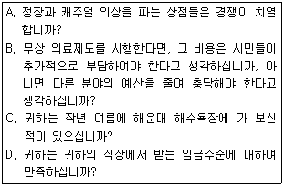
- A, B
- B, C
- C, D
- A, D
(정답률: 68%)

2. 연역법과 귀납법에 관한 설명으로 옳은 것은?
- 연역법은 선(先)조사 후(後)이론의 방법을 택한다.
- 연역법과 귀납법은 상호보완적으로 사용할 수 없다.
- 연역법과 귀납법의 선택은 조사의 용이성에 달려 있다.
- 기존 이론의 확인을 위해서는 연역법을 주로 사용한다.
(정답률: 55%)
3. 설문 조사에 관한 옳은 설명을 모두 짝지은 것은?
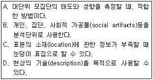
- A, B
- B, C
- A, C, D
- A, B, C, D
(정답률: 62%)
4. 비표준화(비구조화) 면접의 장점을 모두 짝지은 것은?
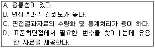
- A, B
- B, C
- C, D
- A, D
(정답률: 57%)
5. 종단연구와 비교한 횡단연구의 장점과 가장 거리가 먼 것은?
- 일반적으로 비용이 적게 든다.
- 엄밀한 인과관계의 검증에 유리하다.
- 검사효과로 인해 왜곡될 가능성이 낮다.
- 조사대상자에 대한 사생활침해의 우려가 낮다.
(정답률: 51%)
6. 질문문항의 배열에 관한 설명으로 옳은 것은?
- 특수한 것을 먼저 묻고 일반적인 것은 나중에 질문한다.
- 개인의 사생활에 대한 것이나 민감한 내용은 먼저 묻는다.
- 시작하는 질문은 흥미를 유발하는 것으로 쉽게 응답할 수 있는 것으로 한다.
- 비슷한 형태로 질문을 계속하여 응답에 정형이 생기게 한다.
(정답률: 62%)
7. 과학적 조사방법의 일반적인 과정을 바르게 나열 한 것은?
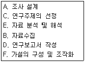
- A → B → C → E → F → D
- A → E → C → B → F → D
- C → F → A → B → E → D
- C → A → F → B → E → D
(정답률: 45%)
8. 다음 중 면접원의 자율성이 가장 적은 면접 유형은?
- 초점집단면접
- 심층면접
- 구조화면접
- 임상면접
(정답률: 51%)
9. 설문지 작성과정 중 사전검사(pre-test)를 실시하는 이유와 가장 거리가 먼 것은?
- 연구하려는 문제의 핵심적인 요소가 무엇인지 확인한다.
- 응답이 한쪽으로 치우치지 않는지 확인한다.
- 질문 순서가 바뀌었을 때, 응답에 실질적 변화가 일어나는지 확인한다.
- 무응답, 기타응답이 많이 발생하는 경우를 확인한다.
(정답률: 55%)
10. 탐색적 조사(exploratory research)에 관한 설명으로 옳은 것은?
- 시간의 흐름에 따라 일반적인 대상 집단의 변화를 관찰하는 조사이다.
- 어떤 현상을 정확하게 기술하는 것을 주목적으로 하는 조사이다.
- 동일한 표본을 대상으로 일정한 시간간격을 두고 반복적으로 측정하는 조사이다.
- 연구문제의 발견, 변수의 규명, 가설의 도출을 위해서 실시하는 조사로서 예비적 조사로 실시한다.
(정답률: 63%)
11. 다음 사례에서 가장 문제될 수 있는 타당도 저해 요인은?
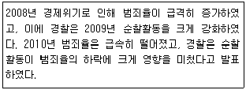
- 성숙효과(maturation)
- 통계적 회귀(statistical regression)
- 검사효과(testing effect)
- 도구효과(instrumentation)
(정답률: 53%)
12. 다음 중 동일한 표본을 대상으로 동일한 내용의 설문을 일정한 시간 간격을 두고 계속해서 조사 하는 설계는?
- 요인설계
- 교차분석 설계
- 계속적 표본설계
- 패널 조사설계
(정답률: 59%)
13. 김치의 상품화로부터 연상될 수 있는 배추, 각종 양념, 숙성 정도, 가격 등과 같은 시험단어들에 대하여 응답자들이 연상해내는 단어들의 순서와 반응시간 등을 측정하여 조사에 활용되는 방법은?
- 설문지법
- 서베이법
- 투사법
- 면접법
(정답률: 67%)
14. 면접 설문조사와 비교할 때 폐쇄형 설문조사의 장점으로 옳은 것은?(오류 신고가 접수된 문제입니다. 반드시 정답과 해설을 확인하시기 바랍니다.)
- 복잡한 쟁점을 다룰 때 효과적이다.
- 설문의 응답률이 높다.
- 개인의 민감한 문제를 다루는데 유리하다.
- 혼동을 일으키는 질문에 대한 추가설명이 가능하다.
(정답률: 33%)
15. 다음의 특성을 가진 연구방법은?
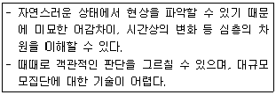
- 참여관찰(participant observation)
- 의사실험(quasi-experiment)
- 내용분석(contents analysis)
- 우편조사(mail survey)
(정답률: 59%)
16. 표본조사와 전수조사에 대한 설명으로 틀린 것은?
- 표본조사 과정에서 발생하는 비표본오류 때문에 표본조사는 전수조사보다 부정확하다.
- 전수조사는 표본조사보다 많은 비용과 시간이 필요로 한다.
- 표본조사는 현실적으로 전수조사가 필요 없거나 불가능할 때 이용한다.
- 모집단이 작은 경우 추정의 정도를 높이는데 전수조사가 훨씬 정밀하다.
(정답률: 60%)
17. 이론에 관한 설명으로 틀린 것은?
- 이론은 수정되지 않는다.
- 사실을 논리적으로 설명한다.
- 개념 간의 관계를 보여준다.
- 일반화된 규칙성을 포함한다.
(정답률: 67%)
18. 2000년부터 2012년까지 주요 일간신문에 나타난 기사를 분석하여, 대북정책 경향을 파악하는 연구를 하였다. 여기서 사용한 연구방법에 관한 설명으로 틀린 것은?
- 조사 반응성을 일으키지 않는다.
- 다양한 기록자료 유형을 분석대상으로 할 수있다.
- 연구에 오류가 있을 때 재시행이 용이하지 않다.
- 대상자에 대한 직접 조사가 어려울 때 사용한다.
(정답률: 60%)
19. 어떤 연구에서 “미국의 도시 중 동양인의 비율이 높은 도시가 동양인의 비율이 낮은 도시보다 정신질환 발병률이 높다.”는 결과를 얻었을 때, 이러 한 연구결과로부터 “백인 정신질환자보다 동양인 정 신질환자가 더 많다.”고 결론을 내리는 오류를 무엇이라고 하는가?
- 조건화 오류
- 생태학적 오류
- 개인주의적 오류
- 일반화 오류
(정답률: 56%)
20. 초점집단면접(focus group interview)에 관한 설명으로 틀린 것은?
- 자료의 통계적 분석이 어렵다.
- 높은 유연성과 타당도를 가진다.
- 개인면접보다 통제하기가 수월하다.
- 실제 상황에 대한 구체적인 정보를 얻을 수 있다.
(정답률: 56%)
21. 과학적 방법의 특징에 관한 설명으로 틀린 것은?
- 간결성 : 최소한의 설명변수만을 사용하여 최대의 설명력을 얻는다.
- 인과성 : 모든 현상은 자연발생적인 것이어야 한다.
- 일반성 : 경험을 통해 얻은 구체적인 사실로 보편적인 원리를 추구한다.
- 경험적 검증가능성 : 이론은 현실세계에서 경험을 통해 검증이 될 수 있어야 한다.
(정답률: 63%)
22. 다음 설명은 외생변수를 통제하는 방법 중 무엇 에 해당하는가?
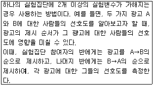
- 매칭(matching)
- 제거(elimination)
- 무작위화(randomization)
- 상쇄(counterbalancing)
(정답률: 56%)
23. 관찰법(observation method)의 분류기준에 관한 설명으로 틀린 것은?
- 관찰이 일어나는 상황이 인공적인지 여부에 따라 자연적/인위적 관찰로 나누어진다.
- 관찰시기가 행동발생과 일치하는가 여부에 따라 체계적/비체계적 관찰로 나누어진다.
- 피관찰자가 관찰사실을 알고 있는가 여부에 따라 공개적/비공개적 관찰로 나누어진다.
- 관찰주체 또는 도구가 무엇인가에 따라 인간의 직접적/기계를 이용한 관찰로 나누어진다.
(정답률: 64%)
24. 다음 중 작업가설로 가장 적절한 것은?
- 한국 사회는 양극화되고 있다.
- 대학생들은 독서를 많이 해야 한다.
- 경제성장은 사회혼란을 심화시킬 수 있다.
- 소득수준이 높아질수록 생활에 대한 만족도는 높아진다.
(정답률: 65%)
25. 다음 중 온라인(on-line) 조사의 장점과 가장 거리가 먼 것은?
- 시각적 자료를 활용할 수 있다.
- 민감한 주제를 다룰 수 있다.
- 응답자가 광범위하여, 표본의 대표성을 확보할 수 있다.
- 조사비용을 절감할 수 있다.
(정답률: 59%)
26. 가설설정 시 유의해야 할 사항으로 틀린 것은?
- 가설은 경험적으로 검증할 수 있어야 한다.
- 연구문제를 해결할 수 있어야 한다.
- 동의반복적(tautological)이어야 한다.
- 검증결과는 가능한 한 광범위하게 적용될 수 있어야 한다.
(정답률: 59%)
27. 양적조사와 질적조사의 사례로 틀린 것은?
- 질적조사 - 사례연구의 기록을 분석하여 핵심적 개념을 추출함
- 양적조사 - 단일사례조사로 청소년들의 흡연횟수를 3개월 동안 주기적으로 기록함
- 질적조사 - 노숙인과 함께 2주간 생활하면서 참여관찰함
- 양적조사 - 초점집단면접을 통해 문제해결방안을 도출함
(정답률: 57%)
28. 복잡한 현상에 대한 응답유형을 알아보기 위해, 탐색적 예비조사(pilot study)에 적합한 질문형식은?
- 개방형 질문
- 폐쇄형 질문
- 부호화 질문
- 범주형 질문
(정답률: 57%)
29. 양적연구와 비교한 질적연구에 관한 설명으로 옳은 것은?
- 일반화의 가능성이 높다.
- 연역적 방법으로 자료를 분석한다.
- 변수 간의 관계 검증, 이론 검증 등에 유용하게 활용될 수 있다.
- 자료수집 단계와 자료 분석 단계가 분명히 구별되지 않는다.
(정답률: 50%)
30. 솔로몬 연구설계에 관한 옳은 설명을 모두 짝지 은 것은?
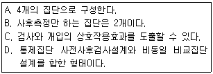
- A, B, C
- A, C
- B, D
- A, B, C, D
(정답률: 32%)
2과목: 조사방법론 II
31. 조작적 정의(operational definition)에 관한 설명으로 옳은 것은?
- 연구자마다 특정 구성개념에 대한 조작적 정의는 동일해야 한다.
- 구성개념에 대한 이론적이고 추상적인 정의를 일컫는다.
- 구성개념의 조작적 정의가 구체적일수록 후속 연구에서 재현하기가 어렵다.
- 구성개념에 대한 조작적 정의가 연구마다 다를 경우, 연구결과가 달라질 수 있다.
(정답률: 63%)
32. 전문직에 종사하는 남성근로자를 대상으로 하는 사회조사에서 변수가 될 수 없는 것은?
- 연령
- 성별
- 직업종류
- 근무시간
(정답률: 75%)
33. 표본의 크기에 관한 설명으로 틀린 것은?
- 표본의 크기는 전체적인 조사목적, 비용 등을 감안하여 결정한다.
- 부분집단별 분석이 필요한 경우에는 표본의 수를 작게 하는 대신 무응답을 줄이려고 노력한다.
- 일반적으로 표본의 크기가 증가할수록 표본오차의 크기는 감소한다.
- 비확률 표본추출법의 경우, 표본의 크기와 표본 오차와는 무관하다.
(정답률: 39%)
34. 측정 오류에 관한 설명으로 틀린 것은?
- 체계적 오류는 사회적 바람직성 편견과 문화적 편견과 관련이 있다.
- 무작위적 오류는 일관적 영향 패턴을 가지지 않고, 측정을 일관성 없게 만든다.
- 측정의 신뢰도는 체계적 오류와 관련성이 크고, 측정의 타당도는 무작위적 오류와 관련성이 크다.
- 측정의 오류를 피하기 위해 간과했을 수도 있는 편견이나 모호함을 찾아내기 위해 동료들의 피드백을 얻는다.
(정답률: 62%)
35. 표본추출과 관련된 용어 설명으로 틀린 것은?
- 관찰단위 : 직접적인 조사대상
- 모집단 : 연구하고자 하는 이론상의 전체집단
- 표집률 : 모집단에서 개별 요소가 선택될 비율
- 통계량(statistic) : 모집단에서 어떤 변수가 가지고 있는 특성을 요약한 통계치
(정답률: 55%)
36. 표본추출과정을 바르게 나열한 것은?
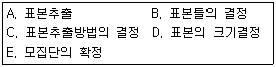
- E → C → D → B → A
- E → B → C → D → A
- E → D → B → C → A
- E → C → B → D → A
(정답률: 56%)
37. 다음 내용에서 설명하고 있는 척도는?
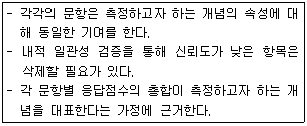
- 리커트(Likert) 척도
- 거트만(Guttman) 척도
- 서스톤(Thurstone) 척도
- 의미분화(Semantic Differential) 척도
(정답률: 52%)
38. 야구선수의 등번호를 표현하는 측정의 수준은?
- 비율수준의 측정
- 등간수준의 측정
- 서열수준의 측정
- 명목수준의 측정
(정답률: 77%)
39. 동일대상에게 시기만 달리하여, 동일 측정도구로 조사한 결과를 비교하는 신뢰도 측정방법은?
- 재검사법(test-retest method)
- 복수양식법(parallel-forms technique)
- 반분법(split-half method)
- 내적 일관성법(internal consistency)
(정답률: 77%)
40. 다음 중 비율척도로 측정하기 어려운 것은?
- 각 나라의 평균 기온
- 각 나라의 1인당 평균 소득
- 각 나라의 1인당 교육년수
- 각 나라의 국방 예산
(정답률: 66%)
41. 총 학생수가 2,000명인 학교에서 800명을 표집할 때의 표집률은?
- 25%
- 40%
- 80%
- 100%
(정답률: 72%)
42. 다음은 어떤 표본추출법에 해당하는가?
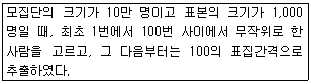
- 단순무작위(simple random)표본추출
- 계통(systematic)표본추출
- 층화(stratified)표본추출
- 집락(cluster)표본추출
(정답률: 67%)
43. 다음 중 모집단을 정확하게 규정하기 위해 고려해야 하는 요소와 가장 거리가 먼 것은?
- 경제성
- 표본단위
- 조사지역
- 조사기간
(정답률: 47%)
44. 다음은 어떤 척도에 관한 설명인가?
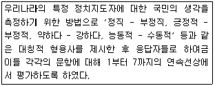
- 서스톤척도
- 거트만척도
- 리커트척도
- 의미분화척도
(정답률: 66%)
45. 측정에서 비체계적 오차와 체계적 오차를 신뢰도와 타당도의 개념과 연결시켜 생각할 때, 타당도는 높으나 신뢰도가 낮은 경우는 어디에 해당하는가?
- 비체계적 오차가 작고 체계적 오차가 작을 경우
- 비체계적 오차가 크고 체계적 오차가 작을 경우
- 비체계적 오차가 작고 체계적 오차가 클 경우
- 비체계적 오차가 크고 체계적 오차가 클 경우
(정답률: 50%)
46. 다음 설문문항은 어떤 척도를 활용한 것인가?
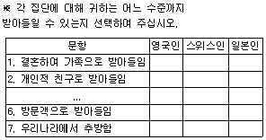
- 총화평정(summated rating)척도
- 사회적거리감(social distance)척도
- 서스톤(Thurstone)척도
- 리커트(Likert)척도
(정답률: 61%)
47. 다음 ( )에 알맞은 것은?
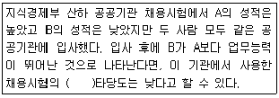
- 내용(content)
- 수렴(convergent)
- 판별(discriminant)
- 예측(predictive)
(정답률: 64%)
48. 연구자들의 가설에 포함된 변수들에 관한 옳은 설명을 <보기>에서 모두 짝지은 것은?
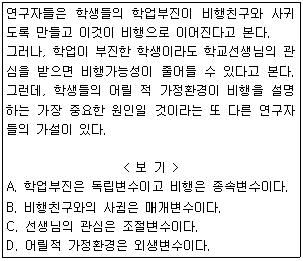
- B, D
- A, B, C
- A, C, D
- A, B, C, D
(정답률: 60%)
49. 표본추출의 대표성에 관한 설명으로 틀린 것은?
- 대표성의 문제란 표본이 모집단을 대표하여 일반화가 가능한 것인가의 문제이다.
- 표본추출에는 우연성이 많아야 대표성이 확보된다.
- 표본은 모집단과 변수의 특성이 유사한 분포를 갖도록 추출되어야 한다.
- 조사에 있어 어떤 것이 중요한 가설인가에 따라 대표성이 달라진다.
(정답률: 60%)
50. 측정도구의 타당도에 관한 설명으로 틀린 것은?
- 내용타당도(content validity)는 전문가의 판단에 기초한다.
- 구성타당도(construct validity)는 예측타당도 (predictive validity)라 한다.
- 동시타당도(concurrent validity)는 신뢰할 수 있는 다른 측정도구와 비교하는 것이다.
- 기준관련 타당도(criterion-related validity)는 내용타당도보다 경험적 검증이 용이하다.
(정답률: 56%)
51. 다음 중 모집단의 모든 표집단위가 표본에 선정될 수 있는 확률 명확히 규정할 수 없고, 각 표집단위의 추출확률 또한 동일하지 않은 표집방법은?
- 단순 무작위 (simple random sampling)
- 할당표집(quota sampling)
- 체계적 표집(systematic sampling)
- 층화표집(stratified sampling)
(정답률: 56%)
52. 서열측정의 특징을 모두 짝지은 것은?
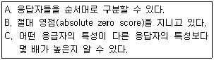
- A
- A, B
- B, C
- A, B, C
(정답률: 71%)
53. 척도구성방법을 비교척도구성(comparative scaling)과 비비교척도구성(non-comparative scaling)으로 구분할 때 비교척도구성에 해당하는 것은?
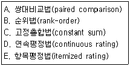
- A, B, C
- A, C, E
- D, E
- A, B, C, D, E
(정답률: 55%)
54. 서스톤(Thurstone)척도는 척도의 수준으로 볼 때, 다음 중 어느 척도에 해당하는가?
- 등간척도
- 서열척도
- 명목척도
- 비율척도
(정답률: 66%)
55. 층화(stratified)표본추출법에 관한 설명으로 틀린 것은?
- 모집단을 일정 기준에 따라 서로 상이한 집단들로 재구성 한다.
- 동질적인 집단에서의 표집오차가 이질적인 집단에서의 오차보다 작다는데 논리적인 근거를 둔다.
- 비례층화추출법과 불비례층화추출법으로 구분할 수 있다.
- 집단간에 이질성이 존재하는 경우 무작위표본추출보다 정확하게 모집단을 대표하지 못하는 단점이 있다.
(정답률: 52%)
56. 다음 중 표본의 크기를 결정하는 요인과 가장 거리가 먼 것은?
- 조사목적
- 조사비용
- 분석기법
- 집단별 통계치의 필요성
(정답률: 38%)
57. 신뢰도는 과학적 연구의 요건 중 어느 것과 가장 관련이 깊은가?
- 논리성
- 검증가능성
- 반복가능성
- 일반성
(정답률: 61%)
58. 집락(cluster)표본추출법에 관한 설명으로 틀린 것은?
- 선정된 각 집락은 다른 조사의 표본으로도 사용 할 수 있다.
- 모집단의 목록이 없는 경우에 매우 유용하다.
- 단순무작위표본추출법에 비해서 시간과 비용면 에서 효율적이다.
- 집락 단계의 수가 많을수록 표본 오차(sampling error)가 작아지게 된다.
(정답률: 34%)
59. 개념적 정의에 관한 설명으로 틀린 것은?
- 순환적인 정의를 해야 한다.
- 적극적 혹은 긍정적인 표현을 써야 한다.
- 정의하려는 대상이 무엇이든 그것만의 특유한 요소나 성질을 적시해야 한다.
- 뜻이 분명해서 누구나 알아들을 수 있는 의미를 공유하는 용어를 써야 한다.
(정답률: 59%)
60. 척도의 신뢰도를 파악하는 방법이 아닌 것은?
- 하나의 척도를 동일인에 대하여 두 번 이상 반복하여 측정한다.
- 한 측정도구의 전체문항들을 반씩 나누어 두 부분간의 상관성을 측정한다.
- 여러 평가자들을 통해 얻은 측정 결과들간의 일치도를 비교한다.
- 측정점수를 몇 가지 다른 기준과 비교하여 일치 되는 정도를 측정한다.
(정답률: 48%)
3과목: 사회통계
61. 두 확률변수 X, Y의 상관계수를 p 라 할 때, 다음 중 틀린 것은?
- -1≤ p ≤1 이다.
- p가 0이면, 언제나 X, Y는 서로 독립이다.
- p는 X, Y의 선형관계에 대한 측도이다.
- p= Cov(X,Y)/(σxσy) 이다. 단, σ는 표준편차를 나타낸다.
(정답률: 39%)
62. 4개의 불량품과 3개의 양호품이 들어있는 상자에서 2개의 제품을 비 복원으로 꺼낼 때, 불량품이 적어도 1개일 확률은?
- 9/42
- 21/42
- 1/7
- 6/7
(정답률: 35%)
63. A반 학생은 50명이고 B반 학생은 100명이다. A반과 B반의 평균성적이 각각 80점과 85점이었다. A반과 B반을 합한 전체 평균성적은?
- 80.0
- 82.5
- 83.3
- 84.5
(정답률: 56%)
64. 가정 난방의 선호도와 방법에 대한 분할표가 다음과 같다. “가스난방”이 “아주 좋다”에 응답한 셀의 기대도수를 구하면?
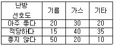
- 31.25
- 28.25
- 32.45
- 26.25
(정답률: 19%)
65. 3개 이상의 모집단의 모평균을 비교하는 통계적 방법으로 가장 적합한 것은?
- t-검정
- 회귀분석
- 분산분석
- 상관분석
(정답률: 49%)
66. A 분포와 B 분포의 특성에 관한 설명으로 틀린 것은?
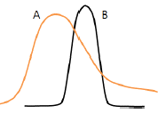
- A의 최빈값은 B의 최빈값보다 작다.
- A의 분산은 B의 분산보다 크다.
- A의 왜도는 양(+)의 값을 가진다.
- B의 왜도는 음(-)의 값을 가진다.
(정답률: 50%)
67. 국회의원 후보 A 에 대한 청년층 지지율 p1과 노년층 지지율 p2 의 차이 p1-p2는 6.6%로 알려져 있다. 청년층과 노년층 각각 500명 씩을 랜덤 추출하여 조사하였더니, 위 지지율 차이는 3.3%로 나타났다. 지지율 차이가 줄어들었다고 할 수 있는지를 검정하기 위한 귀무가설 H0 와 대립가설 H1은?
- H0:p1-p2 = 0.033, H1:p1-p2 > 0.033
- H0:p1-p2 > 0.033, H1:p1-p2 ≤ 0.033
- H0:p1-p2 < 0.066, H1:p1-p2 ≥ 0.066
- H0:p1-p2 = 0.066, H1:p1-p2 < 0.066
(정답률: 40%)
68. 국회의원 선거에 출마한 A 후보의 지지율이 50%를 넘는지 확인하기 위해 유권자 1,000명을 조사 하였더니 550명이 A 후보를 지지하였다. 귀무가설 H0:p = 0.5 대 대립가설 H1 > 0.5의 검정을 위한 검정통계량 Z0는?
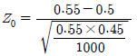
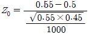
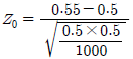
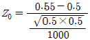
(정답률: 31%)
69. 독립변수가 2개인 중회귀모형의 유의성 검정에 대한 설명으로 틀린 것은?
- H0 : β1 = β2 = 0
- H1 : 회귀계수 β1, β1 중 적어도 하나는 0이 아니다.
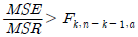
이면 H0 을 기각한다.- 유의확률 p가 유의수준 α 보다 작으면 H0 을 기각한다.
(정답률: 38%)
70. 어떤 시험에 응시한 응시자들이 시험 문제를 모두 푸는데 걸리는 시간은 평균 60분, 표준편차 10분인 정규분포를 따른다고 한다. 이 시험의 시험시간을 50분으로 정한다면 시험에 응시한 1,000명 중 시간 내에 문제를 모두 푸는 학생은 몇 명이 되겠는가? (단, P(Z<1)=0.8413)
- 156
- 158
- 160
- 162
(정답률: 45%)
71. 다음 중 추정량에 요구되는 바람직한 성질이 아닌 것은?
- 불편성(unbiasedness)
- 효율성(efficiency)
- 충분성(sufficiency)
- 정확성(accuracy)
(정답률: 42%)
72. 회귀분석 결과 분산분석표에서 잔차제곱합(SSE)은 60, 총제곱합(SST)은 240임을 알았다. 이 회귀모형의 결정계수는?
- 0.25
- 0.5
- 0.75
- 0.95
(정답률: 43%)
73. 다음은 중회귀식 그리참조=36.69+3.37X1 의 회귀계수표이다. 다음 ( )에 알맞은 값은?
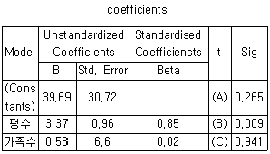
- A=1.21, B=3.59, C=0.08
- A=1.29, B=3.51, C=0.08
- A=10.21, B=36.2, C=0.80
- A=39.69, B=3.37, C=26.5
(정답률: 41%)
74. 다음 중 회귀분석에 관한 설명으로 틀린 것은?
- 회귀분석은 자료를 통하여 독립변수와 종속변수간의 함수관계를 통계적으로 규명하는 분석방법이다.
- 회귀분석은 종속변수의 값 변화에 영향을 미치는 중요한 독립변수들이 무엇인지 알 수 있다.
- 단순회귀선형모형의 오차 εi 에 대한 가정에서 εi~N(0,σ2)이며, 오차는 서로 독립이다.
- 최소자승법은 회귀모형의 절편과 기울기를 구하는 방법으로 잔차의 합을 최소화시킨다.
(정답률: 32%)
75. 어떤 산업제약은 제품 중 10%는 유통과정에서 변질되어 약효를 발휘 할 수 없다고 한다. 이를 확인하기 위하여 해당 제품 100개를 추출하여 실험 하였다. 이때 10개 이상이 불량품일 확률은?
- 0.1
- 0.3
- 0.5
- 0.7
(정답률: 25%)
76. 어떤 가설검정에서 유의확률(p값)이 0.044일 때, 검정결과로 옳은 것은?
- 귀무가설을 유의수준 1%와 5%에서 모두 기각 할 수 없다.
- 귀무가설을 유의수준 1%와 5%에서 모두 기각 할 수 있다.
- 귀무가설을 유의수준 1%에서 기각할 수 없으나 5%에서는 기각할 수 있다.
- 귀무가설을 유의수준 1%에서 기각할 수 있으나 5%에서는 기각할 수 없다.
(정답률: 35%)
77. 두 변수 (x,y)의 상관계수는 0.92이다.
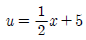
,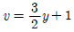
라 할 때, 두 변수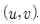
의 상관계수는?- 0.69
- -0.69
- 0.92
- -0.92
(정답률: 33%)
78. 성인 남자 20명을 랜덤 추출하여, 소변 중 요산량(mg/dl)을 조사 하니 평균
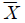
=5.31 , 표준편차 s=0.7 이었다. 성인 남자의 요산량이 정규분포를 따른다고 할 때, 모분산 σ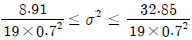
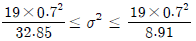
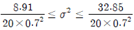
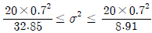
(정답률: 37%)
79. 성인의 흡연율은 40%로 알려져 있다. 금연의 중요성을 강조하는 공익 광고를 실시하면 흡연율이 감소할 것이라는 주장을 확인하기 위한 귀무가설 H0 와 대립가설 H1은?
- H0:p = 0.4, H1:p ≠ 0.4
- H0 p ＜ 0.4, H1:p ≥ 0.4
- H0 p >0.4, H1:p ≤ 0.4
- H0 p = 0.4, H1:p ＜ 0.4
(정답률: 48%)
80. 정규분포 N(12, 22)를 따르는 확률변수 x 로부터 크기 n개의 표본을 뽑았다. 표본평균이 10과 14사이에 있을 확률이 0.9975라면 몇 개의 표본을 뽑은 것인가? (단, P(|Z|＜3) = 0.9975, P(Z＜3) = 0.9987)
- 36
- 25
- 16
- 9
(정답률: 28%)
81. 어느 중학교 1학년의 신장을 조사한 결과 평균이 136.5㎝ , 중앙값은 130.0㎝였다. 신장의 표준편차가 2.0㎝라면 이 분포에 대한 설명으로 옳은 것은?
- 오른쪽으로 긴 꼬리를 갖는 비대칭분포이다.
- 왼쪽으로 긴 꼬리를 갖는 비대칭분포이다.
- 정규분포이다.
- 이들 자료로는 알 수 없다.
(정답률: 42%)
82. 다음 분산분석표의 ( )에 알맞은 것은?
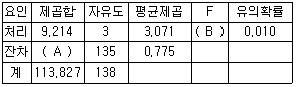
- A : 104.613, B : 3.963
- A : 101.321, B : 1.963
- A : 103.223, B : 3.071
- A : 104.231, B : 0.775
(정답률: 54%)
83. 분산에 관한 설명으로 틀린 것은?
- 편차제곱의 평균이다.
- 자료가 평균에 밀집할수록 분산의 값은 더욱 작아진다.
- 분산은 양수 또는 음수를 취한다.
- 자료가 모두 동일한 값이면 분산은 0이다.
(정답률: 46%)
84. 어느 한 집단에 대해서 신체검사를 하였다. 검사 결과 중 키와 발의 산포크기를 비교하고자 할 때 가장 적합한 것은?
- 변동계수
- 분산
- 표준편차
- 결정계수
(정답률: 43%)
85. 모분산의 추정에서 추정량으로 사용하는 표본분산은 n으로 나누지 않고 n-1 로 나눈 것을 사용 한다. 그 이유는 무엇 때문인가?
- 편향되지 않기 때문이다.
- 효율적이지 않기 때문이다.
- 일치하지 않기 때문이다.
- 충분하지 않기 때문이다.
(정답률: 34%)
86. 평균이 50이고, 표준편차가 10인 어떤 자료에 값이 모두 동일하게 10인 6개의 자료를 더 추가하였다. 표준편차의 변화는?
- 당초의 표준편차보다 더 커진다.
- 당초의 표준편차보다 더 작아진다.
- 변하지 않는다.
- 판단할 수 없다.
(정답률: 24%)
87. 확률변수 x는 이항분포 B(n,p)를 따른다고 하자. n=10, p=0.5일 때, 확률변수 X의 평균과 분산은?
- 평균 2.5, 분산 5
- 평균 2.5, 분산 2.5
- 평균 5, 분산 5
- 평균 5, 분산 2.5
(정답률: 52%)
88. 어느 선거구의 특정 정당에 대한 지지율을 조사하고 자 한다. 지지율의 90% 추정오차한계가 5% 이내가 되기 위한 표본의 크기는 최소한 얼마 이상이어야 하는가?(단, Z~N(0,1) 일 때 P(Z≤1.645)=0.95)
- 371
- 285
- 385
- 271
(정답률: 34%)
89. A 도시에 새벽 1시부터 3시 사이 일어나는 범죄 건수는 시간당 평균 0.2건이다. 범죄발생건수의 분포가 포아송분포를 따른다면, 오늘 새벽 1시와 2시 사이에 범죄발생이 전혀 없을 확률은?
- 약 62%
- 약 72%
- 약 82%
- 약 92%
(정답률: 28%)
90. 올해 국가자격시험 A종목의 성적 분포는 평균이 240점, 표준편차가 40점인 정규분포를 따른다고 한다. 이 자격시험에서 360점을 맞은 학생의 표준화 점수는?
- -1.96
- -3
- 1.96
- 3
(정답률: 46%)
91. 작년도 자료에 의하면 어느 대학교의 도서관에서 도서를 대출한 학부 학생들의 학년별 구성비는 다음과 같다면, 이 자료를 갖고 통계적인 분석을 하는 경우 사용하게 되는 검정 통계량은?
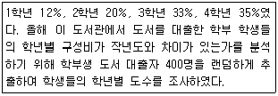
- 자유도가 4인 카이제곱 검정통계량
- 자유도가 (3, 396)인 F-검정통계량
- 자유도가 (1, 398)인 F-검정통계량
- 자유도가 3인 카이제곱 검정통계량
(정답률: 31%)
92. n개의 자료 x1,x2,x3,....,xn의 분산이 10일 때, 각 자료에 5를 더한 자료들의 분산은?
- 10
- 20
- 40
- 50
(정답률: 43%)
93. 일원배치법의 모집단 모형 Yij=μ+αi+εij 에서 오차항 εij의 가정에 대한 설명으로 틀린 것은?
- 오차항 εij 는 정규분포를 따른다.
- 모든 오차항 εij는 서로 독립이다.
- 오차항 εij의 기댓값은 0이다.
- 오차항 εij의 분산은 동일하지 않아도 된다.
(정답률: 40%)
94. A대학교 전체의 남녀 비율은 남자가 60%이고, 남학생이면서 머리를 염색한 학생의 비율은 30%이다. 남학생 1명을 뽑았을 때 그 학생이 머리를 염색하였을 확률은?
- 0.1
- 0.2
- 0.3
- 0.7
(정답률: 40%)
95. 일원배치 모형을 xij=μ+αi+εij(i=1,2,...k; j=1,2,...n)로 나타낼 때, 분산분석표를 이용하여 검정하려는 귀무가설 H0는?(단, i는 처리, j는 반복을 나태는 첨자이며, 오차항 εij~N(0,σ2)이고 서로 독립적이며
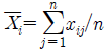
)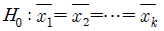
- H0 : α1 = α2 = ..... = αk = 0
- H0 : 적어도 한 αij 는 0이 아니다.
- H0 오차항 εijαi들은 서로 독립이다.
(정답률: 29%)
96. 회귀분석에서 관측값과 예측값의 차이는?
- 오차(error)
- 편차(deviation)
- 잔차(residual)
- 거리(distance)
(정답률: 44%)
97. 통계적 가설의 기각여부를 판정하는 가설검정에 대한 설명으로 옳은 것은?
- 표본으로부터 확실한 근거에 의하여 입증하고자 하는 가설을 귀무가설이라 한다.
- 유의수준은 제 2종 오류를 범할 확률의 최대허용 한계 이다.
- 대립가설을 채택하게 하는 검정통계량의 영역을 채택역이라 한다.
- 대립가설이 옳은데도 귀무가설을 채택함으로써 범하게 되는 오류를 제 2종 오류라 한다.
(정답률: 47%)
98. 다음 중 의미가 다른 것은?
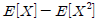
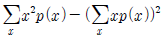
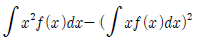
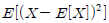
(정답률: 28%)
99. 대학생이 졸업 후 취업했을 때 초임수준을 조사하였다. 인문사회계열 졸업자 10명과 공학계열 졸업자 20명을 각각 조사한 결과 평균초임은 210만원과 250만원이었으며 분산은 각각 300만원과 370만원이었다. 두 집단의 평균차이를 추정하기 위한 합동분산 (pooled variance)은?
- 325.0
- 324.3
- 346.7
- 347.5
(정답률: 16%)
100. 회귀식에서 결정계수 R2에 관한 설명으로 틀린 것은?
- 단순회귀모형에서는 종속변수와 독립변수의 상관계수의 제곱과 같다.
- R2은 독립변수의 수가 늘어날수록 증가하는 경향이 있다.
- 모든 측정값이 한 직선상에 놓이면 R2의 값은 0 이다.
- R2 값은 0에서 1까지 값을 가진다.
(정답률: 37%)
하지만, 보기에서 정답이 "C, D" 인 이유는 다음과 같습니다.
보기에서 각각의 문자는 다른 문자와 한 번씩만 짝을 이룰 수 있습니다. 예를 들어, "A, B"는 "A"와 "B"가 각각 다른 문자와 짝을 이루지 않았기 때문에 정답이 될 수 없습니다.
반면에, "C, D"는 "C"와 "D"가 서로 짝을 이루고, 다른 문자와는 짝을 이루지 않았기 때문에 정답이 될 수 있습니다. 따라서, 정답은 "C, D"입니다.